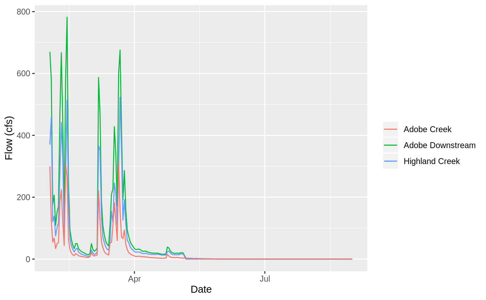
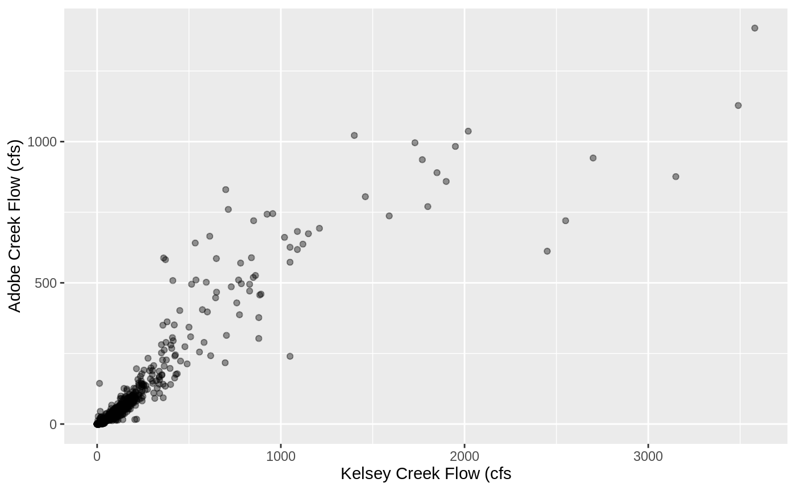
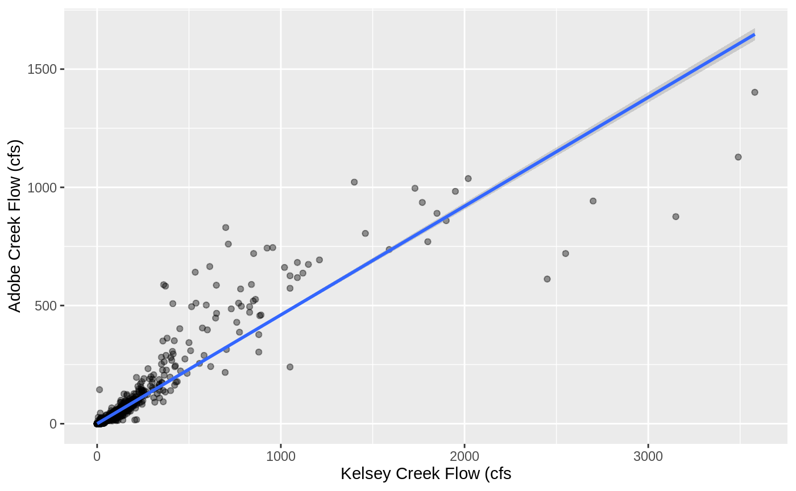
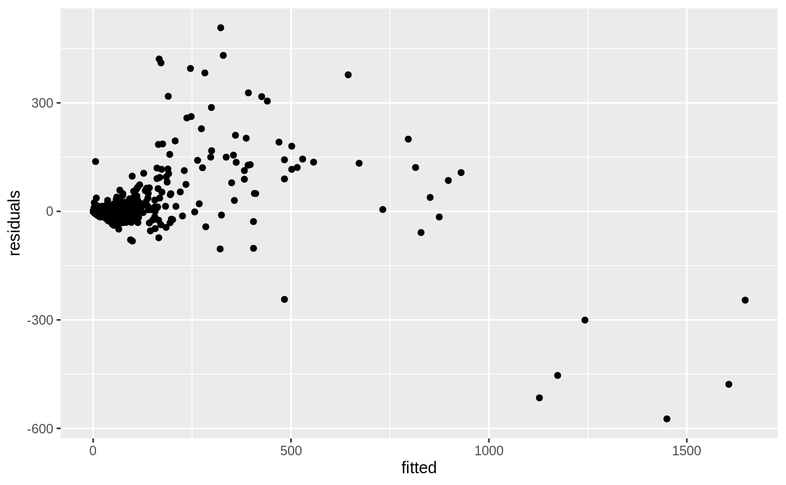

adobe-streamflow-model.RmdThe data being used to develop this model is USGS streamflow data. The following gages were used:
The Highland Creek gage is below Highland dam, the Adobe Creek gage is above the Adobe Creek dam. All this data is bundled within this data package, more information for each is available with:
In order to calculate Adobe Creek after the Highland Creek junction we summed up the two flows.
adobe_creek_downstream <-
adobeCreekData::adobe_creek_flow %>%
left_join(adobeCreekData::highland_creek_flow, by=c("date" = "date"),
suffix = c("_adobe", "_highland")) %>%
select(date, flow_cfs_highland, flow_cfs_adobe) %>%
mutate(adobe_downstream_cfs = flow_cfs_highland + flow_cfs_adobe) %>%
filter(!is.na(adobe_downstream_cfs))This resulted in the following streamflow
adobe_creek_downstream %>%
filter(year(date) == 1975, month(date) %in% 2:8) %>%
ggplot() +
geom_line(aes(date, adobe_downstream_cfs, color="Adobe Downstream")) +
geom_line(aes(date, flow_cfs_highland, color="Highland Creek")) +
geom_line(aes(date, flow_cfs_adobe, color="Adobe Creek")) +
labs(x = "Date", y = "Flow (cfs)", color="")
This is the streamflow data we will use to develop this model.
There is clear correlation between the two creeks, it appears that we can capture this relatioship with some form of linear regression. In this section we explore several alternatives of regression and select the optimal one.
flow_data <- adobe_creek_downstream %>%
left_join(kelsey_creek_flow, by=c("date" = "date")) %>%
select(date, flow_cfs_highland,
flow_cfs_adobe,
adobe_downstream_cfs,
kelsey_cfs = flow_cfs) %>%
filter(!is.na(kelsey_cfs))
training_data <- flow_data %>% filter(year(date) != 1975)
test_data <- flow_data %>% filter(year(date) == 1975)training_data %>%
ggplot(aes(kelsey_cfs, adobe_downstream_cfs)) +
geom_point(alpha=0.4) +
labs(x = "Kelsey Creek Flow (cfs", y = "Adobe Creek Flow (cfs)")
Linear Regression
As we can see
training_data %>%
ggplot(aes(kelsey_cfs, adobe_downstream_cfs)) +
geom_point(alpha=0.4) +
geom_smooth(method = "lm", formula = y ~ x ) +
labs(x = "Kelsey Creek Flow (cfs", y = "Adobe Creek Flow (cfs)") 
lin_reg_model <- lm(adobe_downstream_cfs ~ kelsey_cfs, data = training_data)
lin_reg_evaluation <- tibble(
date = training_data$date,
actuals = training_data$adobe_downstream_cfs,
fitted = fitted(lin_reg_model),
residuals = residuals(lin_reg_model)
)
Generalized Additive Model